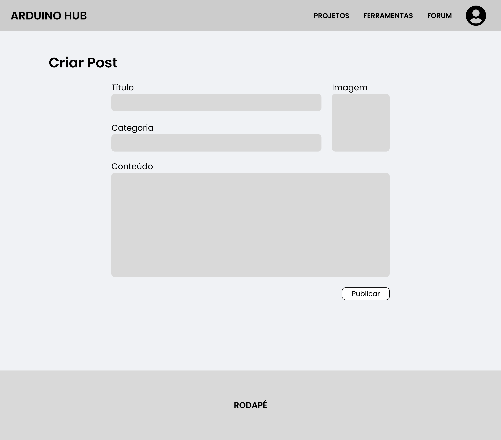

Introdução
Informações básicas do projeto como nome e membros da equipe.
Informações Gerais
- Projeto: Arduino Hub
- Repositório GitHub: Arduino Hub
- Membros da equipe:
Contexto
Detalhes sobre o espaço de problema, justificativas e os objetivos do projeto.
Problema
Os estudantes de Arduino tem dificuldades quando estão começando a estudar devido a vasta quantidade de informações espalhadas pela internet, fazendo com que os mesmos não consigam se decidir ou focar em o que estudar. Tendo isso em mente, o contexto que a ferramenta será utilizada será para quem está em escolas e universidades e para aqueles que são autodidatas.
Objetivos
O objetivo geral deste trabalho é criar uma plataforma que apoie estudantes de Arduino a se desenvolverem, agregando conteúdos relacionados a software e hardware.
Objetivos Específicos
- Facilitar o desenvolvimento de projetos de Arduino do usuário;
- Disponibilizar conteúdos de forma organizada e segmentada para o aprendizado de Arduino;
- Auxiliar o usuário no entendimento dos componentes eletrônicos utilizados nos projetos.
Justificativa
O Arduino é uma ferramenta muito útil na aprendizagem de novos programadores, tendo em vista isso nosso grupo percebeu a dificuldade de encontrar informações direcionadas a pessoas mais inexperientes na área. Portanto, orientações e sugestões claras e estruturadas são cruciais para simplificar o processo de aprendizagem.
Público-alvo
Tendo em vista que o foco deste trabalho está nos estudantes de Arduino, nos o definimos como: Jovens entre 16 e 25 anos, interessados em aprender Arduino, que buscam informações relevantes e selecionadas em uma plataforma simples e amigável.
Concepção (Design Thinking)
Detalhes do processo de discovery do projeto.
Processo de Design Thinking
O arquivo que se segue apresenta o resultado desse processo.
Especificações do Projeto
Documentação das especificações do projeto.
Histórias de Usuários
Com base na análise das personas foram identificadas as seguintes histórias de usuários:
EU COMO...PERSONA |
QUERO/PRECISO...FUNCIONALIDADE |
PARA...MOTIVO/VALOR |
|---|---|---|
| Estudante de Arduino | Quero encontrar informações sobre Arduino de forma mais fácil e organizada | Pois estou sobrecarregado com a quantidade de informações espalhadas pela internet |
| Estudante de Arduino | Quero encontrar informações direcionadas e orientações claras | Porque sou inexperiente na área |
| Estudante de Arduino | Quero entender como funciona os componentes eletrônicos do Arduino | Para aprofundar meu conhecimento na área de eletrônica do Arduino |
| Estudante de Arduino | Quero uma plataforma abrangente que agrega conteúdos de software e hardware do Arduino | Pois sou autodidata e desejo realizar projetos completos |
| Estudante de Arduino | Desejo um fórum na plataforma | Para compartilhar projetos e informações com outras pessoas |
| Administrador | Desejo gerenciar usuários e conteúdo | Para manter a plataforma organizada e em funcionamento |
Requisitos
As tabelas que se seguem apresentam os requisitos funcionais e não funcionais que detalham o escopo do projeto.
Requisitos Funcionais
| ID | Descrição do Requisito | Prioridade |
|---|---|---|
| RF-01 | Permitir o cadastro/login de usuário. | MÉDIA |
| RF-02 | Permitir o usuário gerenciar seu perfil. | BAIXA |
| RF-03 | Disponibilizar informações detalhadas dos componentes do Arduino. | ALTA |
| RF-04 | Permitir o usuário escolher o modelo de Arduino que desejar. | MÉDIA |
| RF-05 | Permitir o usuário acessar e criar projetos. | ALTA |
| RF-06 | Permitir o usuário filtrar projetos por categoria e dificuldade. | MÉDIA |
| RF-07 | Permitir o usuário criar e gerenciar seus posts no fórum. | ALTA |
| RF-08 | Permitir o usuário ordenar os posts por data e curtidas. | ALTA |
| RF-09 | Permitir curtidas e comentários nos posts do fórum. | MÉDIA |
| RF-10 | Disponibilizar tabela de resistor. | ALTA |
| RF-11 | Disponibilizar calculadora de resistor. | ALTA |
| RF-12 | Disponibilizar bibliotecas úteis para download. | ALTA |
| RF-13 | Permitir ao administrador gerenciar posts e projetos. | BAIXA |
Requisitos Não-Funcionais
| ID | Descrição do Requisito | Prioridade |
|---|---|---|
| RNF-01 | As requisições não podem ultrapassar 3s. | MÉDIA |
| RNF-02 | O sistema deve ser responsivo para rodar em um dispositivo móvel e tablet. | ALTA |
| RNF-03 | Deve ser utilizado o JSON Server para substituir o Backend. | ALTA |
| RNF-04 | O sistema deve ser fluído e agradável ao usuário. | BAIXA |
| RNF-05 | O sistema deve permitir alterar o tema. | BAIXA |
Projeto de Interface
Artefatos relacionados com a interface e a interacão do usuário na proposta de solução.
User/Screen Flow e Protótipo interativo
Artefatos relacionados com a interface e a interacão do usuário na solução proposta.

Protótipo interativo
Wireframes
Protótipo de telas do sistema em baixa fidelidade (rascunhos).
Metodologia
Detalhes sobre a organização do grupo e o ferramental empregado.
Ferramentas
Relação de ferramentas empregadas pelo grupo durante o projeto.
| Ambiente | Plataforma | Link de Acesso |
|---|---|---|
| Processo de Design Thinking | Miro | https://miro.com/app/board/uXjVMoAzxas= |
| Repositório de código | GitHub | https://github.com/ICEI-PUC-Minas-PPLCC-TI/ti-1-ppl-cc-m-20232-arduino-hub |
| Hospedagem do site | GitHub Pages | https://icei-puc-minas-pplcc-ti.github.io/ti-1-ppl-cc-m-20232-arduino-hub/ |
| Protótipo Interativo | Figma | https://www.figma.com/proto/LLOcP9sdJavmf96mqgcXp1/ArduinoHub |
| Comunicação | Discord e WhatsApp |
Gestão do Projeto
Usaremos o GitHub Projects para fazer o gerenciamento das tarefas do time, dessa forma o desenvolvimento ficará integrado ao gerenciamento do projeto.
A divisão de tarefas do time é a seguinte:
- André Luís - Scrum Master
- Arnóbio Lima - Responsável pela Documentação
- João Paulo - Desenvolvedor
- Rodrigo de Freitas - Product Owner
- Victor Soares - Desenvolvedor
Controle de Versão
O gitflow do projeto será o seguinte:
Dessa forma, destaca-se que a branch principal (main) é protegida e essa só pode ser alterada através pull request. Este pull request deve ser aceito por outro integrante do grupo, garantindo assim que o código seja revisado por outra pessoa.
Iremos utilizar issues (integrado com o GitHub Projects) para nos orientarmos no o que fazer. Com essa combinação, conseguimos definir: quem é o responsável pela tarefa, qual o tamanho da tarefa, e qual a urgência da mesma.
Solução
Esta seção apresenta todos os detalhes da solução criada no projeto.
Video do Projeto
O vídeo a seguir traz uma apresentação do problema que a equipe está tratando e a proposta de solução.
Funcionalidades
Esta seção apresenta as funcionalidades da solução.
Funcionalidade 1 - Exibir detalhes do Arduino
Permite ao usuário interagir com o Arduino, clicando nos componentes do Arduino e visualizando o detalhamento do componente.
- Estrutura de dados: Arduino
- Instruções de acesso:
- Abra o site (não necessita de login)
- Clique no componente que deseja visualizar os detalhes
- Em seguida, um modal com os detalhes irá abrir
Funcionalidade 2 - Cadastro de projetos
Permite ao usuário cadastrar projetos no site.
- Estrutura de dados: Projetos
- Instruções de acesso:
- Abra o site e acesse a aba "Projetos"
- A lista de projetos já cadastrados irá ser exibida
- Caso o usuário deseje adicionar um novo projeto:
- Deve-se fazer o login e clicar em "Novo Projeto"
- Em seguida, um modal para inserir os detalhes irá abrir
- O usuário deverá preencher e clicar em "Adicionar" para cadastrar o projeto
- Caso o usuário já tenha criado um projeto e deseje editá-lo:
- Basta clicar no icone de edição
- Em seguida, um modal para editar os detalhes irá abrir
- O usuário deverá preencher e clicar em "Editar" para editar o projeto
- Caso o usuário já tenha criado um projeto e deseje excluí-lo:
- Basta clicar no icone de exclusão
- Em seguida, irá aparecer um alert
- O usuário deverá clicar em "OK" para confirmar a exclusão do projeto
Funcionalidade 3 - Pesquisa de projetos
Permite ao usuário pesquisar projetos cadastrados por nome e nível de dificuldade.
- Estrutura de dados: Projetos
- Instruções de acesso:
- Abra o site (não necessita de login)
- Acesse a aba "Projetos"
- Em seguida, escreva o nome do projeto e/ou selecione o nível de dificuldade desejado
Funcionalidade 4 - Cadastro de posts (fórum)
Permite ao usuário cadastrar posts no fórum.
- Estrutura de dados: Posts
- Instruções de acesso:
- Abra o site
- Faça o login
- Acesse a aba "Fórum"
- Caso o usuário deseje adicionar um novo post:
- Deve clicar em "Novo Post"
- Em seguida, um modal para inserir os detalhes irá abrir
- O usuário deverá preencher e clicar em "Adicionar" para cadastrar o novo post
-
Caso o usuário deseje editar um post já cadastrado:
- Deve clicar no botão "Editar" do post desejado
- Em seguida, um modal para editar os detalhes irá abrir
- O usuário deverá preencher e clicar em "Editar" para editar o post
-
Caso o usuário deseje excluir um post já cadastrado:
- Basta clicar no icone de exclusão
- Em seguida, irá aparecer um alert
- O usuário deverá clicar em "OK" para confirmar a exclusão do post
Funcionalidade 5 - Cadastro de comentários e curtidas nos posts
Permite o usuario cadastrar comentário e curtidas nos posts.
- Estrutura de dados: Posts
- Instruções de acesso:
- Abra o site
- Faça o login
- Clique no nome do post
- Digite no campo o comentário que deseja publicar
- Em seguida, clique no botão "Comentar"
- Caso queira apagar basta clicar no ícone da lixeira
Funcionalidade 6 - Ordenação de posts
Permite o usuário ordenar a visualização dos posts por mais recente ou mais curtido.
- Estrutura de dados: Posts
- Instruções de acesso:
- Abra o site e acesse a aba "Fórum"
- A lista de posts já cadastrados irá ser exibida
- Será exibido na parte superior da página um menu dropdown
- O usuário poderá selecionar:
- Mais recentes
- Mais curtidos
Funcionalidade 7 - Estoque de componentes
Permite o usuário gerenciar o seus componentes eletrônicos usados em projetos com Arduino.
- Estrutura de dados: Usuários
- Instruções de acesso:
- Abra o site e faça login na sua conta
- Acesse a aba "Componentes"
- Será exibida a lista de componentes cadastrada pelo usuário conectado
- Caso o usuário deseje adicionar um novo componente:
- Deve clicar em "Novo Componente"
- Em seguida, um modal para inserir os detalhes irá abrir
- O usuário deverá preencher e clicar em "Adicionar" para cadastrar o novo componente
-
Caso o usuário deseje editar um componente já cadastrado:
- Deve clicar no botão "Editar" do componente desejado
- Em seguida, um modal para editar os detalhes irá abrir
- O usuário deverá preencher e clicar em "Editar" para editar o componente
-
Caso o usuário deseje excluir um componente já cadastrado:
- Deve clicar no botão "Excluir" do componente desejado
- Em seguida, um modal para confirmar a exclusão irá abrir
- O usuário deverá clicar em "Excluir" para confirmar a exclusão do componente
Funcionalidade 8 - Calculadora de Resistor
Permite o usuário encontrar a especificação do resistor, baseado no código de cores.
- Instruções de acesso:
- Abra o e acesse a aba "Ferramentas"
- Será exibida a calculadora de resistor
- O usuário deve informar as 4 cores do resistor
- O sistema devolve a resistência calculada
Estruturas de Dados
Descrição das estruturas de dados utilizadas na solução com exemplos no formato JSON.
Estrutura de Dados - Arduino
Partes do Arduino
{
"id": 1,
"name": "Pinos digitais de entrada e saída",
"descricao": "Pinos que podem ser programados para agirem como entradas ou saídas fazendo com que o Arduino interaja com o meio externo.",
"coords": {
"x": 317,
"y": 48,
"radius": 25,
"smx": 173,
"smy": 26,
"smradius": 18
}
}
Esse JSON gera dois imagemap, um para desktop e outro para mobile. Dessa forma, precisamos usar coordenadas para desktop e coordenadas para mobile (sm).
Estrutura de Dados - Projetos
Projetos adicionados site.
{
"id": "00873583",
"titulo": "Semáforo com Arduino",
"categoria": "Primeiro projeto",
"dificuldade": "easy",
"conteudo": "Este é o projeto semáforo com Arduino...",
"autor": "André Luís",
"usuario": "ca5bd6fa-f820-4109-8d28-5acacf899580"
}
Estrutura de Dados - Posts
Postagens realizadas no fórum
{
"id": "99e45125",
"titulo": "Meu segundo post",
"dataPostagem": 1701480764326,
"autor": "André Luís",
"usuario": "ca5bd6fa-f820-4109-8d28-5acacf899580",
"categoria": "Conhecendo o site",
"conteudo": "Olá,\n estou conhecendo o site!",
"curtidas": 1,
"usuariosCurtidas": [
"03915cdc-2854-4168-ae21-0cceafd379be"
],
"comentarios": []
}
Estrutura de Dados - Usuários
Usuários da aplicação
{
"id": "ca5bd6fa-f820-4109-8d28-5acacf899580",
"name": "André Luís",
"username": "andrels",
"email": "andrels@andrels.net",
"password": "andrels123",
"components": [
{
"id": "913034d5",
"name": "Arduino Mega",
"qtd": 12
},
{
"id": "a331d17d",
"name": "Protoboard",
"qtd": 2
}
]
}
Esse JSON armazena tanto os usuários, tanto os componentes que cada usuário possui (da sessão de cadastro de componentes).
Módulos e APIs
Esta seção apresenta os módulos e APIs utilizados na solução.
Fonts:
- Font Awesome - https://fontawesome.com/
JSON Server:
FAQ
Perguntas e respostas comuns associadas ao projeto.
Referências Bibliográficas
Esta seção apresenta as referências bibliográficas utilizadas no projeto.